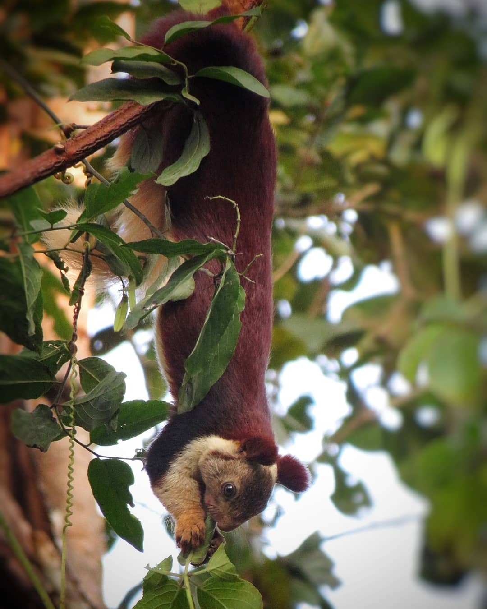
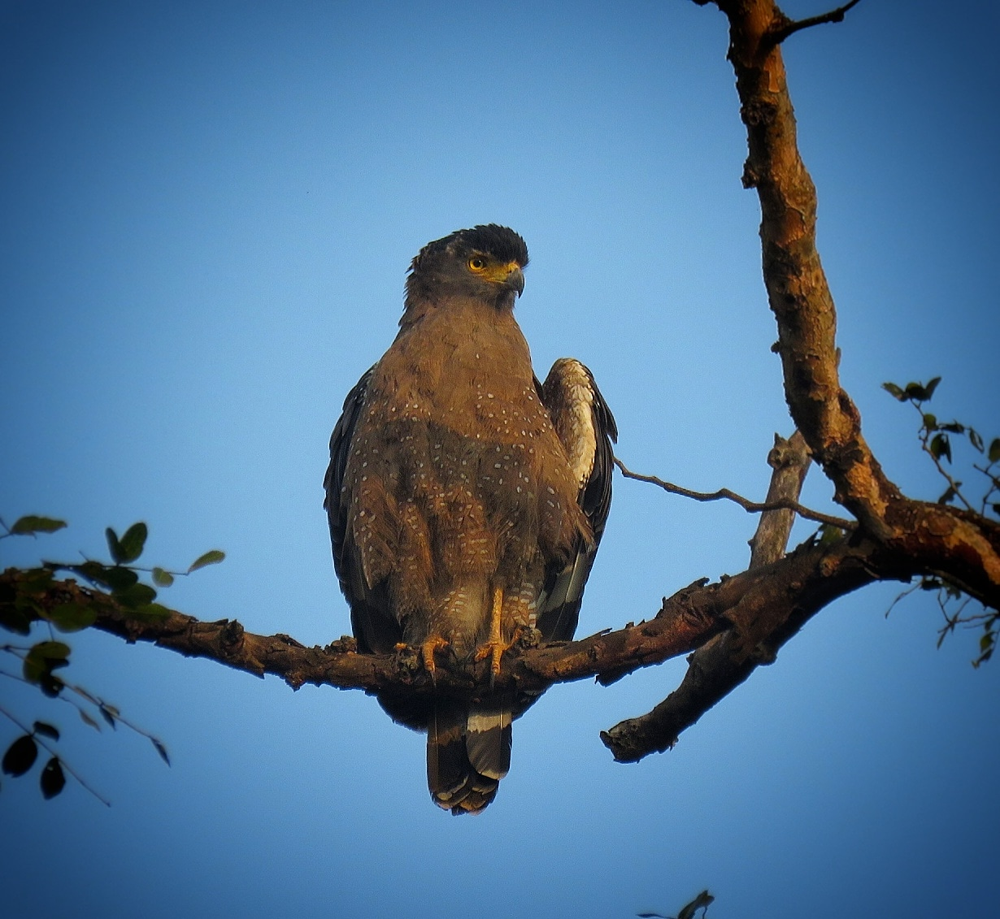
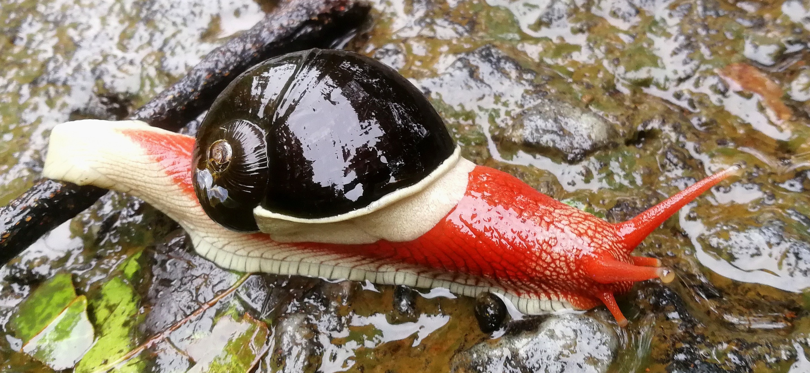
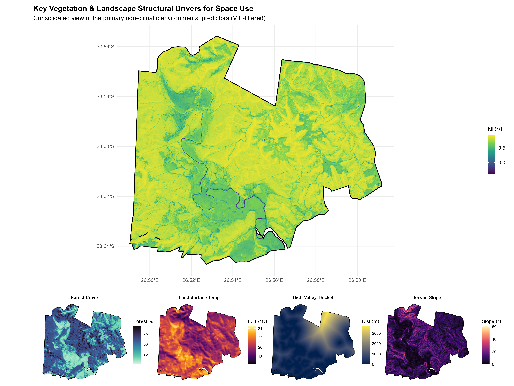
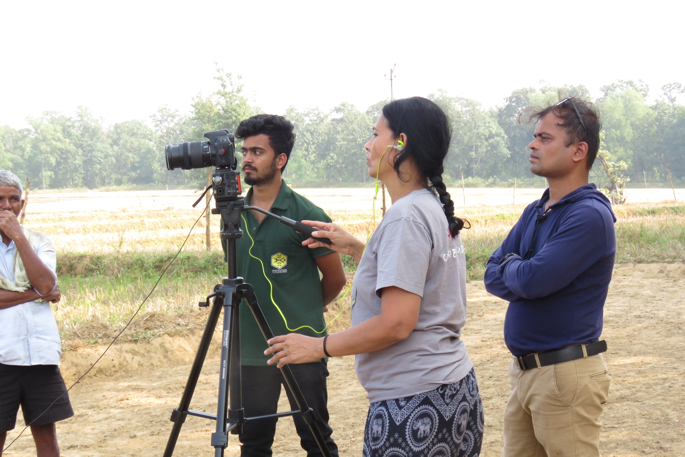
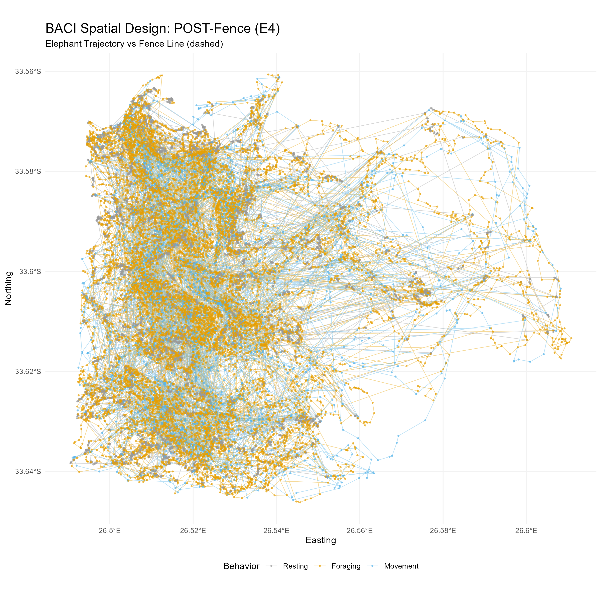
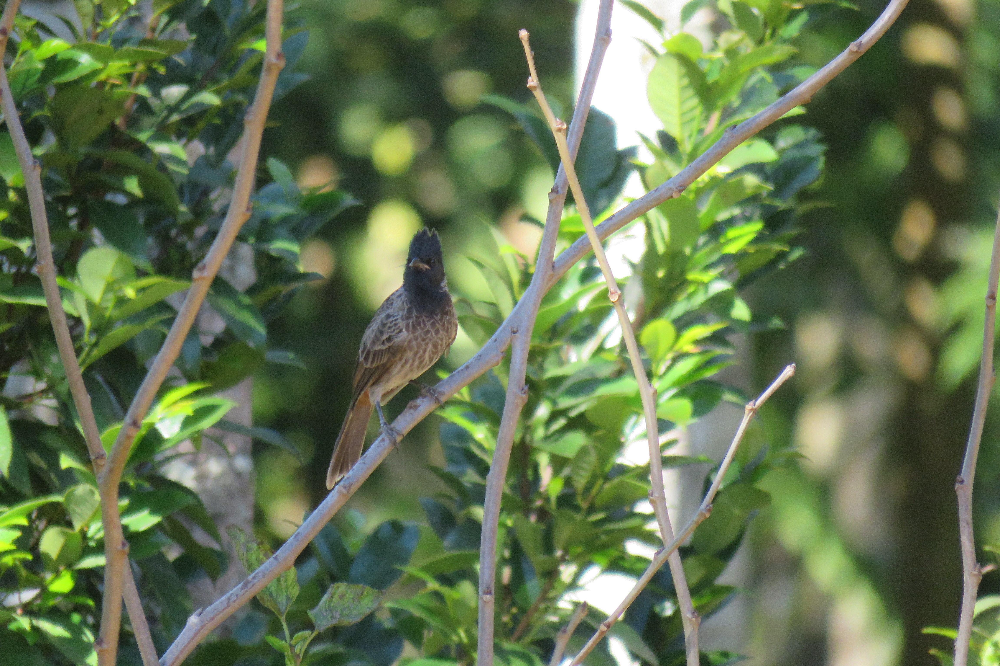
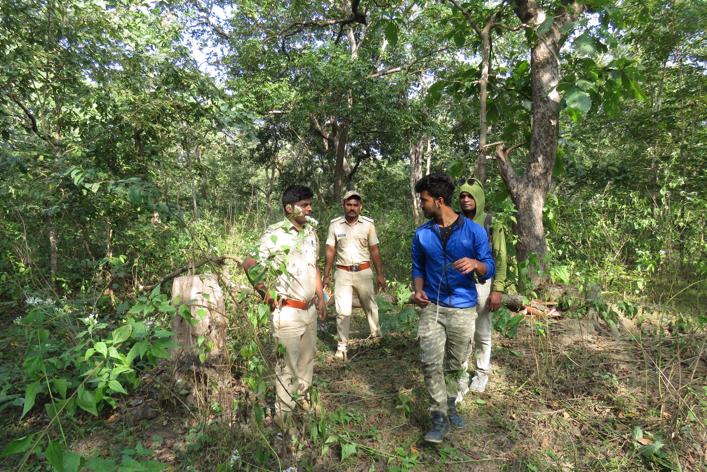

Bridging Wildlife Conservation and Data Science.
Expert in Earth Observation, Spatial Modelling, and Ecological Data Fusion.
“Delivering actionable ecological insights through advanced machine learning and multi-sensor data fusion.”
About My Work
I am a specialized researcher and ecological data scientist focused on understanding how climate change reshapes species habitats and ecological interactions.
My work delivers robust analytical solutions by integrating remote sensing, spatial modeling, and multi-source data fusion. Currently pursuing a PhD at the University of Padua in collaboration with Wageningen University & Research.
My expertise includes building climate-informed Species Distribution Models (SDMs), continental-scale biodiversity monitoring using Automated Machine Learning (AutoML), and developing interactive Web-GIS platforms like the BioHabs Dashboard.
A part of my work contribution regarding elephant conservation was featured in the NatGeo documentary above, highlighting human–wildlife coexistence in the Western Ghats of India. My ongoing research in South Africa explores elephant habitat utilization following fence removal in Kariega Game Reserve.
Core Toolkit




In the Field & Studio










